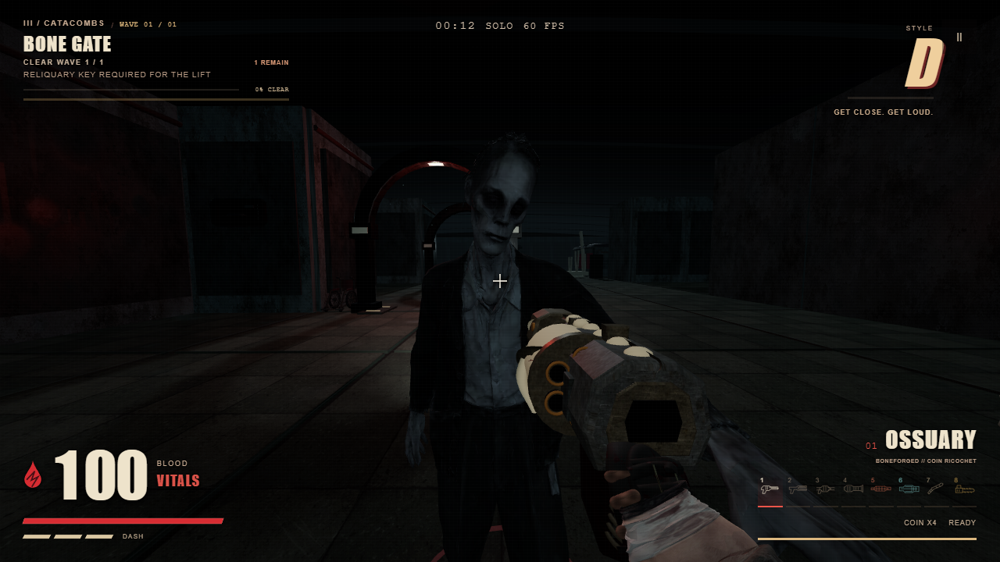
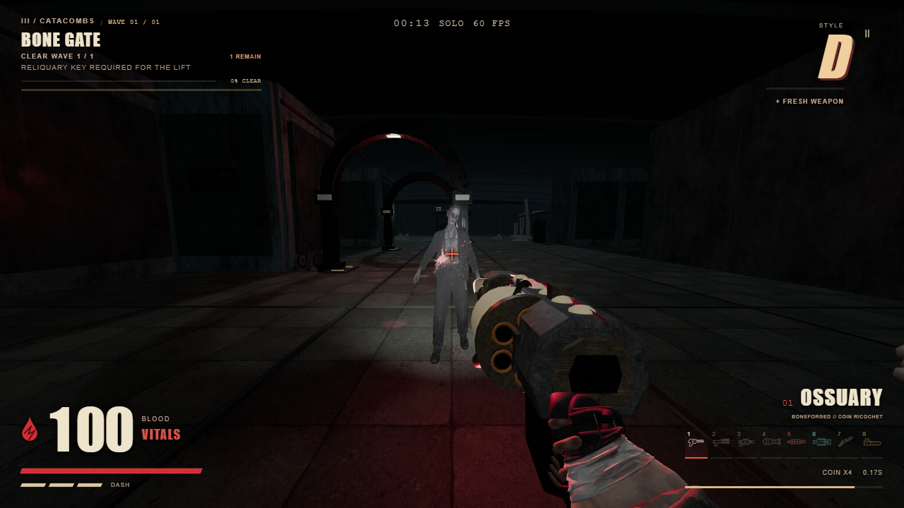

Actual game capture · Chase and impact passThey have to get close.
A distance-driven chase, a committed cross-body swipe, and damage synchronized to the reaching hand. The clip below records the real game simulation in fixed time steps.

Close contact: the zombie reaches the player before damage lands.
Bullet contact: a brief spray, small droplets, recoil and lasting surface evidence.
Verified: 65 focused tests, a production build, all three zombie attack tempos, 120 seconds of keyboard/mouse play, mobile framing, and return to the cinematic menu. No browser or asset errors.
Implementation and reference record · Browser evidence